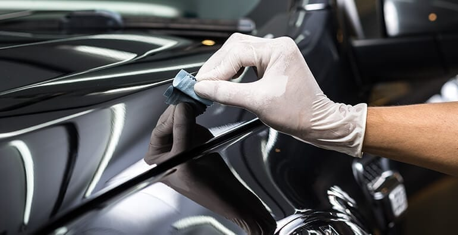

¿Qué es el Detailing?
También conocido como Detallado Vehicular, es el conjunto de técnicas y procesos destinados a la limpieza, rejuvenecimiento y protección de las distintas superficies de un vehiculo. El objetivo final es lograr un aspecto de auto de exposición o show car. La correcta limpieza pasa por el uso de las herramientas y productos adecuados que no sean agresivos para los Materiales
El rejuvenecimiento se refiere a la recuperación de ese aspecto de nuevo mdeiante diferente procesos dependiendo del tipo de superficie, como le pulido de la pintura hasta el nutrido de asientos de cuero, gomas, etc. El paso para culminar el proceso de detallado es proteger la superficie protgiendo y reduciendo el deterioro de la pintura por las inclemencias de las condiciones ambientales.